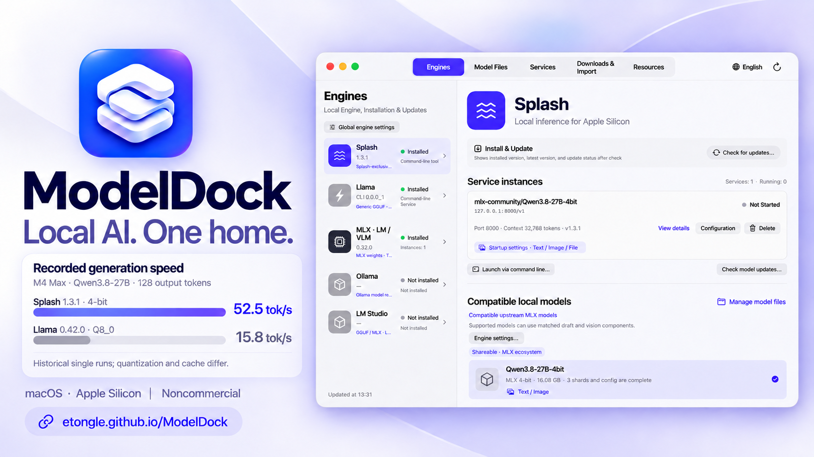
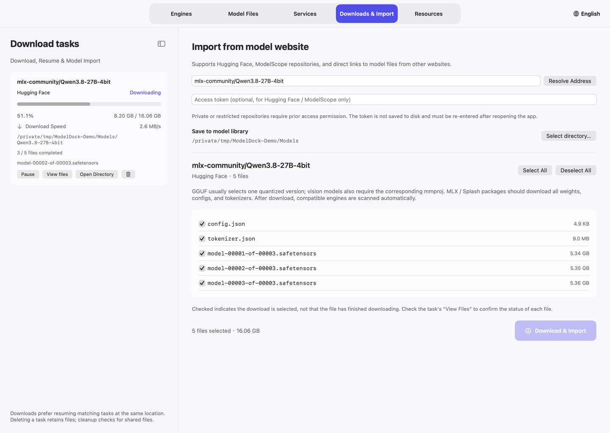
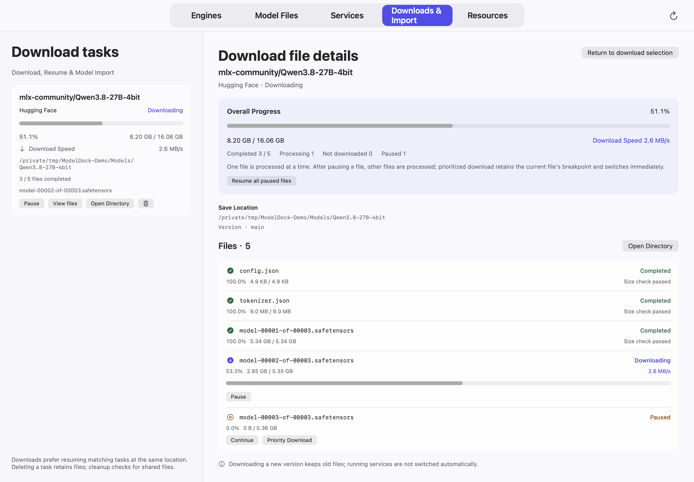

Native macOS · Apple Silicon
Local AI.
One place to run it.
Your engines, model files, downloads and services—together in a native Mac app. Choose a model, configure its capabilities, and connect the tools you already use.
Apple Silicon · macOS 14+ · Noncommercial use

From files to a working endpoint
A clear path to your next model.
Keep the model, the runtime and the service distinct. Manage each without losing track of the others.

A repository checkbox selects a file; the task detail confirms its download status.
Stay in control
Big downloads.
Small, clear decisions.
Pause one file to make room for another. Keep old model revisions for later switching. Review cleanup before removing files.
- Per-task and per-file progress, speed and time remaining. Choose 1–8 concurrent model downloads.
- Task deletion preserves files; incomplete-file cleanup is a separate action.
- Running models and shared auxiliary files receive deletion protection.

Use a compatible engine
One manager. Different runtimes.
Input capabilities depend on the model, its auxiliary components, and the actual runtime version.
| Engine | Models | How it runs |
|---|---|---|
| Splash | Compatible upstream MLX; matching legacy packed models | Text; supported current assemblies can include images/PDFs and matched drafts |
| Llama / llama.cpp | GGUF | Text or supported media with a matching projector |
| MLX-LM / MLX-VLM | MLX Safetensors | LM for text; VLM for supported multimodal architectures |
| MLX Audio | Qwen3-ASR / Qwen3-TTS | Transcription and WAV synthesis; Base models use reference audio/text |
| Ollama | Ollama-registered models | Native model lifecycle and per-model capabilities |
| LM Studio | GGUF / MLX | Load through the application or its supported CLI |
| llama.cpp · Prism | GGUF | Support depends on the local build and model architecture |
| Strata | Prepared Flash-Next GGUF / Metal assemblies | Experimental Apple Silicon source build on macOS 15+; matched MTP and optional images; external APIs |
Bring your own client
Direct connection.
Or one shared gateway.
Register a ready model in pi or OpenCode. Multilingual live translation combines microphone captions, editable model and language settings, and optional speech. Each saved solution retains a dedicated gateway URL.
See the connection guide →/v1Direct service endpoints remain available.
Make it yours
English by default.
Switch when you want.
Choose English, Simplified Chinese, French, Portuguese or system language in Settings. The interface updates immediately.
Source available · Noncommercial
Explore it. Learn from it.
Keep it noncommercial.
First-party code and documentation use PolyForm Noncommercial 1.0.0. Permitted noncommercial use, modification and redistribution are allowed; commercial use is not granted. Third-party engines and models keep their own terms.
Give your models a home.
Current releases are not Apple-notarized. See the installation guide before opening a downloaded copy.